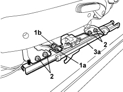
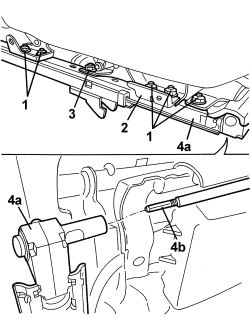

7045A67 SLIDING GUIDE (ONE), LEFT OR RIGHT FOR FRONT SEAT - R.R WITH SEAT REMOVED
- Path
- Procedures > 70 FITTINGS > 7045 FRONT SEATS > 7045A FRONT SEAT ASSEMBLY > 7045A67 SLIDING GUIDE (ONE), LEFT OR RIGHT FOR FRONT SEAT - R.R WITH SEAT REMOVED
- Kind
- repair procedure (removal / refitting; the operation number is the code)
- Applies to
- all engines; all production periods
- Interactive page
- https://sloeber94.github.io/elrnDB/alfa/159/en/#/939011299
Applies to: all engines; all production periods
 Removing
Removing
 Refitting
Refitting- Only for outer guide.
Op. 7045A63 FRONT SEAT GUIDE OUTER GUARD (ONE), LH OR RH - R R
- Only for inner guide.
1. Move lever (1a) in the arrowed direction and release terminal (1b) from lever (1c).
- Release sheath terminal (2a) from retainer (2b).

Applies to: all engines; all production periods
- For both guides.
1. Undo the bolt (1a) and move support bar (1b).
2. Undo the nuts.
3. Remove guide (3a) releasing it from guide connection bar (3b).

Applies to: all engines; all production periods
- If necessary, unscrew bolts (1a) and remove seat anchorage mechanism (1b).

Applies to: all engines; all production periods
Refitting
Removing- Check that the guide is not damaged.
- If removed, position the seat anchorage mechanism and then tighten the bolts.
- Refit the guide by attaching to the guide connection bar.
- Tighten the nuts.
- Position the mounting bar and tighten the bolt.
- Only for inner guide.
- Attach the sheath terminal to the retainer.
- Attach the terminal to the lever.
- Only for outer guide.
Op. 7045A63 FRONT SEAT GUIDE OUTER GUARD (ONE), LH OR RH - R R
- For both guides.
- Lift up the seat sliding control lever and keep it raised, then manually slide the two guides until they are in the rear end of travel position to align them; lastly, release the sliding control lever and attach the retainers for the guides to the attachment teeth.
Applies to: all engines; all production periods; only with equipment: Electric seats
Removing
Refitting- Outer guide.
Op. 7045A42 GUARD (ONE) FOR FRONT SEAT, LEFT OR RIGHT - R.R.
Op. 7045A63 FRONT SEAT GUIDE OUTER GUARD (ONE), LH OR RH - R R
1. Undo the sliding guide retaining nuts.
2. Unscrew the lower seat protection bolt.
3. Remove sliding guide (3a) releasing flexible shaft (3b) from the steering control motor.

Applies to: all engines; all production periods; only with equipment: Electric seats
- Inner guide.
1. Tighten the bolt (1a) securing the seat belt anchorage link (1b).
2. Release seat belt anchorage link (1b) from retainer (2a), then move.

Applies to: all engines; all production periods; only with equipment: Electric seats
1. Undo the sliding guide retaining nuts.
2. Recover the bracket.
3. Undo the nut.
4. Remove sliding guide (4a) releasing flexible shaft (4b) from the steering control motor.

Applies to: all engines; all production periods; only with equipment: Electric seats
Refitting
Removing- Outer guide.
- Check that the outer guide is not damaged.
- Check that the outer guide is aligned with the inner guide. If necessary, move both guides to the end of their travel (front or rear) to align.
- Do up the electric motor flexible shaft and position the sliding guide.
- Tighten the lower seat protection bolt.
- Tighten the sliding guide retaining nuts.
Op. 7045A63 FRONT SEAT GUIDE OUTER GUARD (ONE), LH OR RH - R R
Op. 7045A42 GUARD (ONE) FOR FRONT SEAT, LEFT OR RIGHT - R.R.
- Move the seat to the front and rear end travel to allow motor position self-learning.
Check that the seat slides properly.
- Inner guide.
- Check that the inner guide is not damaged.
- Check that the inner guide is aligned with the outer guide. If necessary, move both guides to the end of their travel (front or rear) to align.
- Do up the electric motor flexible shaft and position the sliding guide.
- Tighten the nut.
- Position the bracket.
- Tighten the sliding guide retaining nuts.
- Position the seat belt anchorage link in its seat, then fit to the retainer and tighten the bolt.
- Tighten the bolt to the recommended torque.
Component | Fastening | dia | Value (daNm) | Validity |
|---|---|---|---|---|
SEAT BELT PRETENSIONER | Bolt | - | 3.6 ÷ 4.4 |
- Move the seat to the front and rear end travel to allow motor position self-learning.
Check that the seat slides properly.
Topics linked from this page (2)
- 7045A42 GUARD (ONE) FOR FRONT SEAT, LEFT OR RIGHT - R.R.
- 7045A63 FRONT SEAT GUIDE OUTER GUARD (ONE), LH OR RH - R R